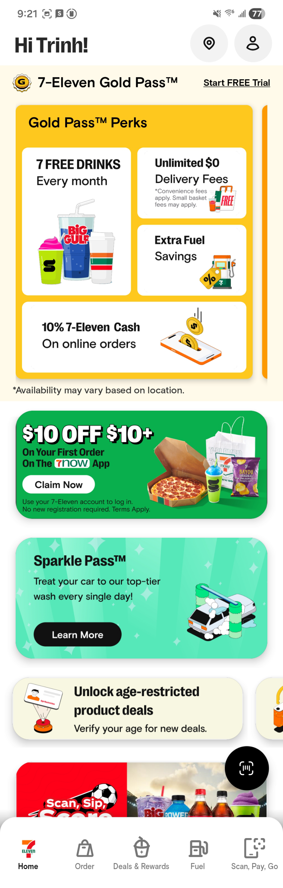
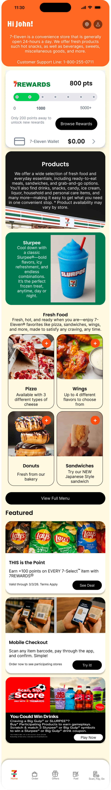
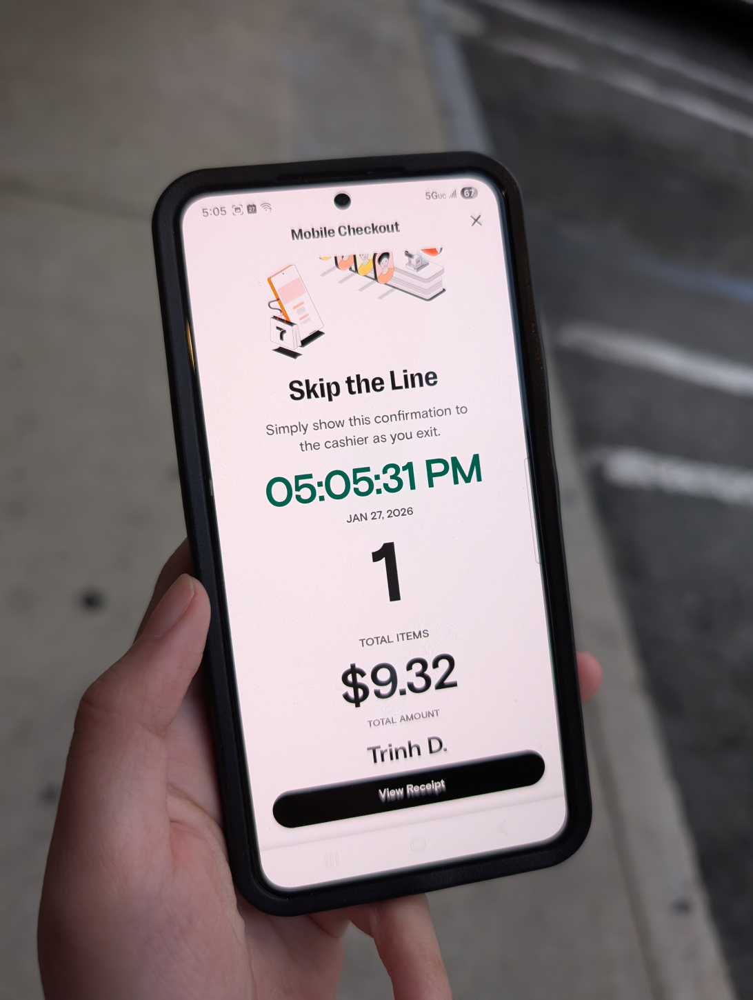
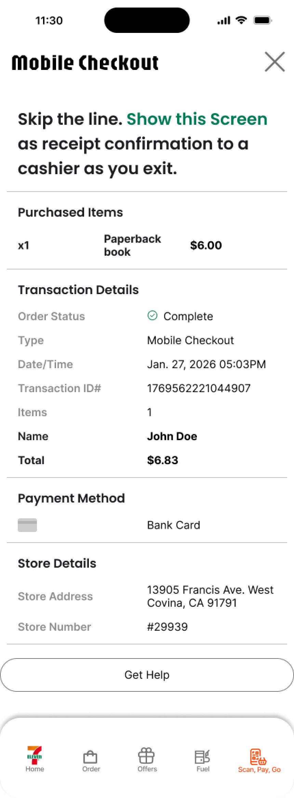

Overview
A better version of the 7-Eleven mobile app
Curated around 7-Eleven's own brand identity — "Give the customers what they want, when and where they want it." — this redesign targets the app's core UX failures: a home screen dominated by deals instead of products, an unclear ordering flow, and a confirmation experience that leaves users guessing whether their scan actually worked.
Issues Identified
Outdated, unclear, and misaligned
Deals-First Home Screen
The main page featured more "deals" than products — misaligned with 7-Eleven's push toward fresh food and a younger audience.
Unclear Ordering Flow
Users had no clear path from browsing to ordering — location selection, cart, and checkout were disconnected steps with no logical sequence.
Ambiguous Checkout Confirmation
Users couldn't tell if mobile checkout succeeded. Misleading store participation signals added further confusion at the point of scan.
UX Research
Interviews, reviews, and competitive analysis
Small-scale interviews, online user reviews, and news coverage revealed that more than half of 7-Eleven users access the app via mobile (Semrush data). Pain points clustered around: confusing reward systems, hard-to-reach support, and mobile checkout confusion — especially around which locations actually support it.
7-Eleven's goal: open more infrastructure like their highly successful Japan counterpart. The redesign aligns the app with that ambition — clean, simplistic, and customer-centric.
Feature 01
Redesigned home screen with support line & products
The old home screen buried products under deals. The redesign surfaces top items, adds a fresh food section, puts the support line front and center, and moves deals into a dedicated "Featured" section — all while showing a mobile checkout how-to card on first launch.
Before — Original Home Screen

After — Redesigned Home Screen

Feature 02
Location screen added to the ordering flow
With the full menu on display, users can add an item, pick their location and order method, then return to the menu to complete checkout. This exposes users to more products while solving the location-selection gap that caused mobile checkout failures.
Feature 03
Verified location disclosure at checkout start
Users expressed confusion about which stores supported mobile checkout. The fix: location verification is shown at the very start of the order flow — not buried after the fact. Verified stores are clearly marked before any commitment is made.
Feature 04
Clearer scanning confirmation
The confirmation screen is the highest-stakes moment in the app. The redesign combines the receipt and confirmation into a single screen, adds clear step guides, and uses strong visual feedback so users know immediately that their scan succeeded.
Before — Ambiguous confirmation

After — Clear receipt + step guide

Prototype
High-fidelity screens & interactive flow
High-fidelity screens built in Figma using 7-Eleven's brand palette — adapted to meet WCAG AA contrast standards. The interactive prototype covers the full checkout journey from landing through rewards redemption.
Style Guide
Brand-faithful, WCAG-accessible
The redesign stays true to 7-Eleven's established brand colors while addressing contrast and accessibility gaps present in the original. A clean white base keeps the UI uncluttered and scan-ready.
7-Eleven Red
#CC0000
7-Eleven Green
#007A33
Accent Orange
#FF6B00
Surface White
#F5F5F5